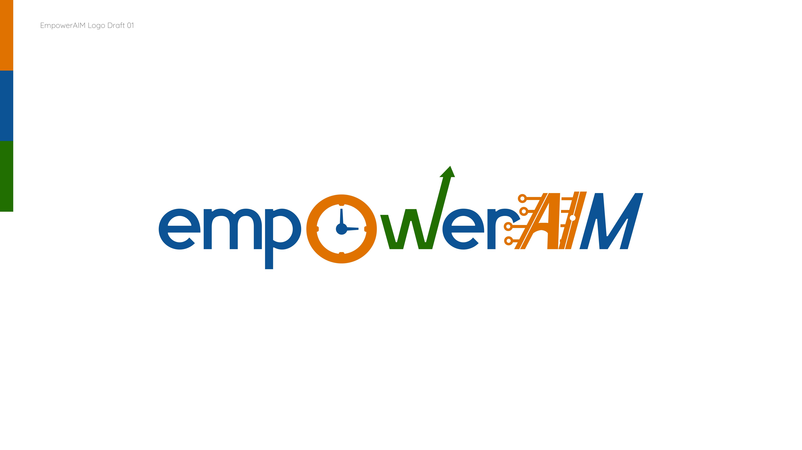
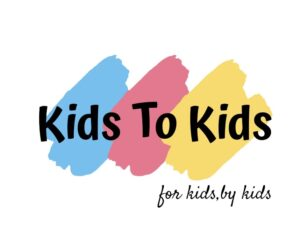
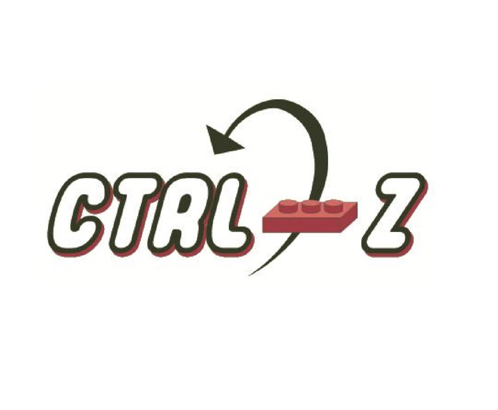
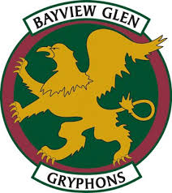

01Published research
AI Fish Identification
2024–2025
CNN model that identifies freshwater species from a camera feed to quantify biodiversity and track invasive populations.
CNNsPythonEcology
View case study
AI founder and builder at UC Berkeley.
Currently building Helicyn, a machine-learning startup in San Francisco, after founding EmpowerAIM, leading KidsToKids, and presenting at UN and global forums along the way.
Five stops, each one adding a new system to build in.
Early education at Toronto Montessori and Bayview Glen; founding member of KidsToKids in 2022, building STEM programs across Canada, the UK, and China.
SHAD Canada fellowship and early AI research, moving from FLL robotics into machine learning.
UN Youth Delegate presenting EmpowerAIM at the UN STI Forum, Asia-Pacific Forum on Sustainable Development, Climate Week NYC, and the UNESCO Forum on Education × AI.
AWS Machine Learning internship and UPenn ESAP, building neural nets, NLP pipelines, and AI agents in teams of four.
Enrolled at UC Berkeley, Class of 2030. Founding Helicyn, a machine-learning startup based in San Francisco. Current build.
A machine-learning startup based in San Francisco. Early, technical, and building in the open.
Case studies, not a project list: problem, build, and outcome for each.
CNN model that identifies freshwater species from a camera feed to quantify biodiversity and track invasive populations.
Full-stack platform pairing a Selenium TikTok/YouTube scraper with an LLM pipeline that generates channel signatures, content ideas & growth strategies.
A calendar built for competitive high-school swimmers to balance academics with practices and meets.
Automatic fish-tank monitor tracking ammonia, nitrites, nitrates, pH & temperature, alerting users through a mobile app when readings drift out of range.
Manual species surveys are slow and require expert divers, making it hard to track invasive populations at scale.
Trained a convolutional neural network on freshwater species imagery and built a camera-feed inference pipeline to classify species in real time.
Published in the UNESCO Academy Journal.
Creators lack a fast way to translate raw channel data into an actionable growth strategy.
A Selenium scraper for TikTok and YouTube feeding an LLM pipeline that generates channel signatures and content ideas, surfaced through a React frontend.
Built in a team of four as part of UPenn ESAP; validated with 20+ interviews and 200+ cold emails before designing the MVP.
Competitive swimmers juggle training load against academic deadlines with no tool built for their schedule shape.
A JavaScript scheduling app modeling practice and meet lanes alongside coursework.
Used to manage personal training and academic load through a competitive swim season.
Manual aquarium water testing is inconsistent and reactive rather than preventive.
Embedded C firmware reading a sensor array for ammonia, nitrites, nitrates, pH & temperature, alerting users through a mobile app when readings drift out of range.
Completed as an IB MYP Personal Project.
Hover or focus a project or a skill to see how they connect.
Select a node to see its connections here.
From founding ventures in Toronto to technical work in the Bay Area. Helicyn is covered above as the current build.



Selected forums where EmpowerAIM's work on AI and digital equity was presented, as a UN Youth Delegate.
Presented EmpowerAIM's work on AI-driven education equity, contributing youth perspectives for the Sustainable Development Goals.
Contributed youth perspectives on digital equity and AI for the Sustainable Development Goals.
Presented on AI for climate and education equity as a UN Youth Delegate.
EmpowerAIM was 1 of 10 projects chosen globally to present at the forum.
Built & presented a prototype app delivering offline AI learning tools for kids displaced by conflict and climate change.
Top 13 of 2,280 applicants across 89 countries (top 0.5%). Interviewed at UN HQ, New York.
1560 / 1600
Reading 760 · Math 800
2090 / 2130
Top 3 in Ontario, 200m Freestyle Relay; Top 16, 100m Freestyle.
1st in Toronto, 100m Freestyle; Top 3, 50m Freestyle.
Top 219 / 65,000
Group 4 Honour Roll
Top 266 / 65,000
Group 4 Honour Roll
Top 25 / 6,000
Group 2 Honour Roll
94%+ in every subject, Upper Canada College.
Top 10% of the UCC Class of 2026.
Plus the Symons '47 Prize for Canadian Studies, UCC.
+ Swim/Lifesaving Instructor, First Aid.
Canadian Ski Instructors' Alliance.
Level 8
Theory 95/100.
3+ models
ML models & cloud workflows built during a machine-learning internship.
2nd / 12
Smart-thermometer prototype, team of 6.
Select a skill to see where it's been used.
Select a skill to see where it's used.
Undergraduate · expected 2030
IB + OSSD Diploma · 2020–2026
3 accelerated math courses · Distinction

2018–2020
Send it.
Or email · Connect on LinkedIn →